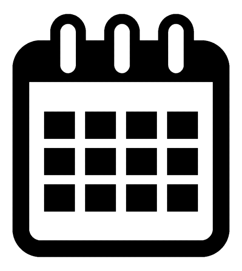

Thông tin cuộc thi Chinh phục CV, có ngay công việc - Career
Catching

12/12/2019
- 1. THÔNG TIN CUỘC THI
- Vòng 1: Vòng loại: 02/04 - 09/04/2022: Thí sinh nộp CV dự thi về ban tổ chức qua cổng Elearning tại link.
- Vòng 2: Top 05 thí sinh có kết quả cao nhất sẽ được
- - Đặt hẹn tư vấn hướng nghiệp cá nhân với các anh chị chuyên viên trong lĩnh vực ngành nghề phù hợp với đặc điểm riêng của bạn. Các chuyên viên sẽ giúp bạn khám phá ngành nghề và lập kế hoạch phát triển cụ thể.
- - Lên xe và ghé thăm môi trường làm việc của tập đoàn thương mại hàng đầu AEON MAL
-
2.THỂ LỆ THAM DỰ CUỘC THI
- - Viết CV cho một vị trí cụ thể mà mình mong muốn
- - Sau đó nộp bài thi, kèm theo bản mô tả công việc của vị trí đó, về cổng Elearning Chuẩn bị kỹ năng ứng tuyển, mục nộp bài Cuộc thi Chinh phục CV.
- 👉 Link đăng ký dự thi: Tại đây
- Sau khi đăng ký, bạn sẽ được BTC thêm vào khóa Chuẩn bị kỹ năng ứng tuyển trên Elearning và có thể tự học cách viết CV và tiến hành đăng tải CV tại khóa học, mục nộp bài Cuộc thi Chinh phục CV.
- Bài dự thi hợp lệ phải bao gồm:
- - CV cá nhân
- - Mô tả công việc (Job Description) của vị trí bạn định ứng tuyển
- - CV được viết bằng tiếng Anh sẽ được cộng thêm 0.5 điểm ưu tiên
- 3. THỜI GIAN ĐĂNG KÝ
- - Thời gian nhận bài: 27/3/2022 - 9/4/2022
- - Hạn chót nộp bài: 23h59' ngày 9/4/2022
- 4. CÔNG BỐ VÀ TRAO GIẢI
- - Các CV của thí sinh sẽ được thông báo điểm vào tuần 3 của tháng 4/2022.
- - 05 thí sinh có CV ấn tượng nhất sẽ được chọn vào Vòng 2 của chuỗi hoạt động Career Catching. Đó là cơ hội thăm quan doanh nghiệp và tư vấn hướng nghiệp chuyên sâu cùng anh chị chuyên viên đến từ doanh nghiệp.
- - Đồng thời các bạn sẽ được trao giải vào lễ bế mạc của Tháng hướng nghiệp và Ngày hội việc làm VLU's Job Fair 2022: Upskilling for Success
- - Cơ cấu giải thưởng bao gồm các học bổng, quà tặng có tổng giá trị lên đến 20 triệu đồng.
- 👉 Đăng ký ngay tại: Tại đây
-
- THÔNG TIN VỀ 5 CUỘC THI THUỘC THÁNG HƯỚNG NGHIỆP VÀ NGÀY HỘI VIỆC LÀM VLU'S JOB FAIR
2022
- Nếu bạn muốn nhận giấy chứng nhận cho kỹ năng làm việc và khẳng định vị thế với nhà tuyển dụng thì cuộc thi này sẽ giúp bạn!
- 🔸 Vòng 1: Chuỗi 05 cuộc thi kỹ năng làm việc
- SV tham dự ít nhất 1 trong 5 cuộc thi sẽ có cơ hội trải nghiệm chuyến thăm quan tập đoàn thương mại bán lẻ hàng đầu thế giới và khám phá lĩnh vực ngành nghề chuyên sâu cùng với chuyên gia tư vấn 1:1.
- Thời gian thi: 9h00-10h00 Chủ nhật hàng tuần của tháng 4/2022
- Cuộc thi 1 - Top Office (3/4)
- Cuộc thi 2 - Top English (10/4)
- Cuộc thi 3 - Top Excel (17/4)
- Cuộc thi 4 - Top Logic (24/4)
- Cuộc thi 5 - Chinh phục CV, có ngay công việc (hạn nộp vào 09/04/2022)
- 🔸 Vòng 2: Chuyến thăm quan tập đoàn AOEN MALL và ngày hội tư vấn hướng nghiệp cá nhân
- TOP THÍ SINH CÓ KẾT QUẢ CAO Ở 1 TRONG 5 CUỘC THI VÒNG 1 SẼ NHẬN ĐƯỢC:
- Đặt hẹn tư vấn hướng nghiệp cá nhân với các anh chị chuyên viên trong lĩnh vực ngành nghề phù hợp với đặc điểm riêng của bạn. Các chuyên viên sẽ giúp bạn khám phá ngành nghề và lập kế hoạch phát triển cụ thể.
- Lên xe và ghé thăm môi trường làm việc của tập đoàn thương mại hàng đầu AEON MALL
- ◆ Mọi thông tin chi tiết vui lòng liên hệ:
- Bộ phận Quan hệ Doanh nghiệp, Trung tâm Phát triển Năng lực Sinh viên
- Facebook: https://www.facebook.com/TTPTNLSV
- Email: qhdn@vlu.edu.vn
- SĐT: 028 7109 9224